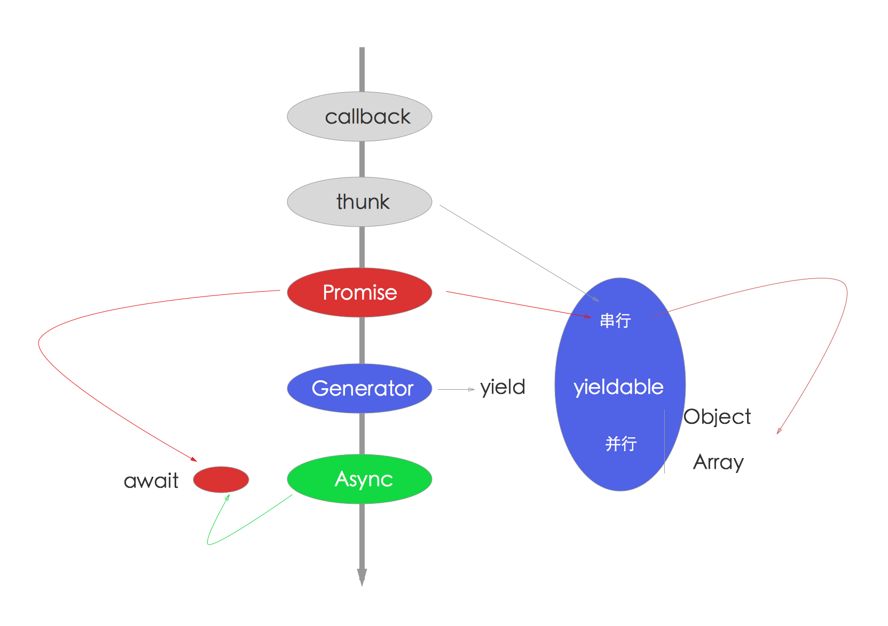
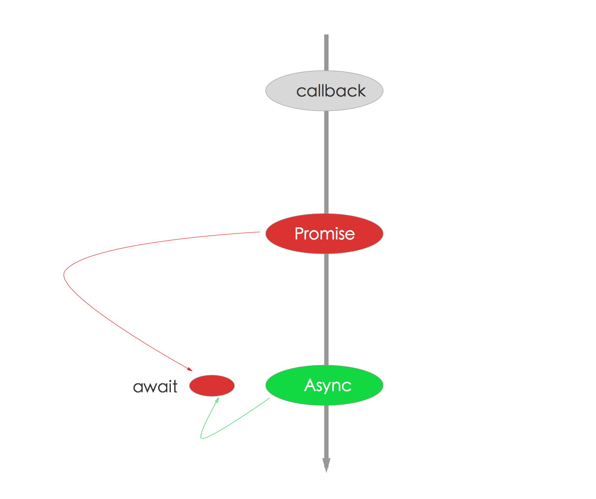

asynchronous-flow-control
《深入浅出js（Node.js）异步流程控制》
摘要
目前在js流程控制领域越来越乱，各种派系。。。比如promise，generator，async函数，各种混战，在百花齐放的今天，作为前端或Node.js沾边工程师或全栈工程师，你知道该学哪种么？
- 从下一代测试框架ava说起
- 流程控制发展的前世今生概览
- 从co引出的血案，到yieldable 5种，到aysnc函数，聊聊同步的流程控制
- 最后推导一下学习重点、未来趋势
个人介绍
i5ting（桑世龙），空弦科技 CTO，StuQ 明星讲师，开源项目 Moajs 作者，Node.js 技术布道者，即将出版《更了不起的 Node 4：将下一代 Web 框架 Koa 进行到底》
曾就职在新浪、网秦，曾做过前端、后端、数据分析、移动端负责人、做过首席架构师、技术总监，全栈技术实践者，目前主要关注技术架构和团队梯队建设方向。

流程控制
- 从下一代测试框架ava开始
- co引出的血案
- generator/yield
- co源码解析
- convert or compose
- yieldable 5种
- async/await
- 推导出学习重点
涵盖
- callback vs hell
- Node.js的error-first和EventEmitter
- thunk
- promise/a+
- generator/yield
- async/await
- 异常处理
- 各种xxx-fy
从下一代测试框架ava开始
讲流程控制，你扯到测试框架干什么？看似无关，但实际上测试框架才是对流程控制提供最全的最简洁的集成的，如果通用性的测试框架都解决不好流程控制问题，那么，这样的东西不用也罢。
先简单的介绍一下：AVA是面向未来的测试运行器
简单的说ava是mocha的替代品，
- es6语法支持更好，对aysnc/await有支持
- 执行效率更高，使用io并发，就必须保证测试的原子性
- 语义上更简单，集众家之长
虽然 JavaScript 是单线程，但在 Node.js 里由于其异步的特性使得 IO 可以并行。AVA 利用这个优点让你的测试可以并发执行，这对于 IO 繁重的测试特别有用。另外，测试文件可以在不同的进程里并行运行，让每一个测试文件可以获得更好的性能和独立的环境。在 Pageres 项目中从 Mocha切换 到 AVA 让测试时间从 31 秒下降到 11 秒。测试并发执行强制你写原子测试，意味着测试不需要依赖全局状态或者其他测试的状态，这是一件非常好的事情。
tj曾说：“如果他现在重写mocha，也会写成ava这样”
闲言少叙
- 同步
- callback
- promise
- generator
- async function
准备
$ npm init
$ npm i -D ava
$ npm i -D co-exec
测试
同步
js语言里除了ajax、setTimeout等大部分都是同步，写同步代码是一种幸福，稍后你就懂了
1.js
import test from 'ava';
test('synchronization', t => {
const a = /foo/;
const b = 'bar';
const c = 'baz';
t.false(a.test(b) || b === c);
});
异步
但是我们习惯回调，无论事件还是ajax，都是异步的。另外Node.js里又为了性能而异步，即所谓的天生异步，每个api都是异步的。
以Node.js为例
- error-first callback（错误优先的回调机制）
- EventEmitter （事件发射机制）
总结，callback是用的最多的，是绝大部分的api遵守的约定，而EventEmitter是辅助机制，通过继承EventEmitter，来解耦业务逻辑。
2.js
import test from 'ava';
const exec = require('child_process').exec
test.cb('error-first callback with setTimeout', t => {
setTimeout(() => {
t.pass();
t.end();
}, 2000);
});
test.cb('error-first callback with exec', t => {
exec('cat *.js bad_file | wc -l',
function (error, stdout, stderr) {
t.pass();
t.end();
});
});
promise
为了让大家从回调的地狱中回到天堂，Promise你值得拥有
Promise是一种令代码异步行为更加优雅的抽象，有了它，我们就可以像写同步代码一样去写异步代码。它是从Common JS规范分裂出来的，目前主流是Promose/A+规范。
jQuery很早就引入了Promise的概念，主要是deffered和promise对象。而在Angularjs里也有类似的实现，叫$q，其实是promise库q的精简版。
先看测试，后面会详细讲
3.js
import test from 'ava';
// promise
test('promise', t => {
return Promise.resolve(3).then(n => {
t.is(n, 3);
});
});
generator
generator是es6的一个特性，本身是用于计算的，通过generator和yield写的代码看起来像同步的，主要是yield来处理同步的事儿，但yield又只能在generator里。
在ava里是generator特别简单
4.js
import test from 'ava';
var exec = require('co-exec');
test('generatorFn with exec()', function * (t) {
let commit = yield exec('ls -alt|grep .gitignore|wc -l');
t.true(commit == 1);
});
async function
generator执行的时候，需要先生成对象，然后next进行下一步。这样做起来还是比较麻烦，能不能不需要执行器啊？于是async函数就应运而生了。
async函数es7 stage-3的特性，可惜差一点就进入到es7规范了。async函数里使用await可以做到和yield类似的效果，但await只能接promise对象。
5.js
import test from 'ava';
test('async function', async t => {
const bar = Promise.resolve('bar');
t.is(await bar, 'bar');
});
执行
➜ asynchronous-flow-control git:(master) ✗ ava -v *.js
✔ 1 › synchronization
✔ 2 › error-first callback with exec
✔ 3 › promise
✔ 4 › generatorFn with exec()
✔ 5 › async function
✔ 2 › error-first callback with setTimeout (2s)
6 tests passed [09:48:27]
➜ asynchronous-flow-control git:(master) ✗ ava -v *.js -s
✔ 1 › synchronization
✔ 2 › error-first callback with setTimeout (2s)
✔ 2 › error-first callback with exec
✔ 3 › promise
✔ 4 › generatorFn with exec()
✔ 5 › async function
6 tests passed [09:48:35]
说明
- 第一个是并行的，所以顺序有点乱
- 第二个是顺序执行
-s
Promise
顺序执行的代码和错误有限的回调方式都是js引擎默认支持的，这部分大家会调用接口，无太多变化，而Promise是对callback的思考，或者说改良方案，目前使用非常普遍，这里详细讲解一下。
node里的Promise
promise最早是在commonjs社区提出来的，当时提出了很多规范。比较接受的是promise/A规范。后来人们在这个基础上。提出了promise/A+规范，也就是实际上的业内推行的规范。es6也是采用的这种规范。
The Promise object is used for asynchronous computations. A Promise represents an operation that hasn't completed yet, but is expected in the future.
Promise对象用于异步技术中。Promise意味着一个还没有完成的操作（许愿），但在未来会完成的（实现）。

在Node.js 0.12里实现9/11，在6.2和7实现100%，中间版本实现了10/11。所以Node.js对Promise的支持是非常好的，0.12之后的绝大部分版本都支持的不错。
Promise 的最大优势是标准，各类异步工具库都认同，未来的 async/await 也基于它，用它封装 API 通用性强，用起来简单。
要想知道node.js有哪些比较好的promise实现，最好的办法就是看一下最知名的bluebird库的benchmark里比较里哪些。
- async@1.5.0
- babel@5.8.29
- davy@1.0.1
- deferred@0.7.3
- kew@0.7.0
- lie@3.0.1
- neo-async@1.6.0
- optimist@0.6.1
- promise@7.0.4
- q@1.4.1
- rsvp@3.1.0
- streamline@1.0.7
- text-table@0.2.0
- vow@0.4.11
- when@3.7.4
Promise是什么？
A promise is an abstraction for asynchronous programming. It’s an object that proxies for the return value or the exception thrown by a function that has to do some asynchronous processing. — Kris Kowal on JSJ
Promise表示一个异步操作的最终结果。与Promise最主要的交互方法是通过将函数传入它的then方法从而获取得Promise最终的值或Promise最终最拒绝（reject）的原因。
- 递归，每个异步操作返回的都是promise对象
- 状态机：三种状态转换，只在promise对象内部可以控制，外部不能改变状态
- 全局异常处理
定义
var promise = new Promise(function(resolve, reject) {
// do a thing, possibly async, then…
if (/* everything turned out fine */) {
resolve("Stuff worked!");
}
else {
reject(Error("It broke"));
}
});
术语
- Promises Promise规范自身
- promise对象 promise对象指的是 Promise 实例对象
- ES6 Promises 如果想明确表示使用 ECMAScript 6th Edition 的话，可以使用ES6作为前缀（prefix）
- Promises/A+ Promises/A+。 这是ES6 Promises的前身，是一个社区规范，它和 ES6 Promises 有很多共通的内容。
- Thenable 类Promise对象。 拥有名为.then方法的对象。
hello promise
给出一个最简单的读写文件的api实例，它是error-first风格的典型api
async/promise/hello.js
// callbacks
var fs = require("fs");
fs.readFile('./package.json', (err, data) => {
if (err) throw err;
console.log(data.toString());
});
下面，我们把它变成promise的简单示例
async/promise/hellopromise.js
// callbacks to promise
var fs = require("fs");
function hello (file) {
return new Promise(function(resolve, reject){
fs.readFile(file, (err, data) => {
if (err) {
reject(err);
} else {
resolve(data.toString())
}
});
});
}
hello('./package.json').then(function(data){
console.log('promise result = ' + data)
}).catch(function(err) {
console.log(err)
})
这二段代码执行效果是一模一样的，唯一的差别是前一种写法是Node.js默认api写法，以回调为主，而后一种写法，通过返回promise对象，在fs.readFile的回调函数，将结果延后处理。
这就是最简单的promise实现
形式
new Promise(function(resolve, reject){
})
参数
- resolve 解决，进入到下一个流程
- reject 拒绝，跳转到捕获异常流程
调用
hello('./package.json').then(function(data){
})
全局处理异常
hello('./package.json').then(function(data){
}).catch(function(err) {
})
结论
Promise核心：将callback里的结果延后到then函数里处理或交给全局异常处理
封装api的过程
还是以上面的fs.readFile为例
fs.readFile('./package.json', (err, data) => {
if (err) throw err;
console.log(data.toString());
});
参数处理：除了callback外，其他东西都放到新的函数的参数里
function hello (file) {
...
}
返回值处理：返回Promise实例对象
function hello (file) {
return new Promise(function(resolve, reject){
...
});
}
结果处理：通过resolve和reject重塑流程
function hello (file) {
return new Promise(function(resolve, reject){
fs.readFile(file, (err, data) => {
if (err) {
reject(err);
} else {
resolve(data.toString())
}
});
});
}
我们知道所有的Node.js都是error-first的callback形式，通过上面的例子，我们可以肯定是所有的Node.js的API都可以这样来处理，只要它们遵守Promise规范即可。
每个函数的返回值都是Promise对象
为了简化编程复杂性，每个函数的返回值都是Promise对象，这样的约定可以大大的简化编程的复杂。
它可以理解为是递归的变种思想应用，只要是Promise对象，就可以控制状态，就可以支持then方法，参数还是Promise对象，这样就可以无限个Promise对象链接在一起。
// callbacks to promise
var fs = require("fs");
function hello (file) {
return new Promise(function(resolve, reject){
fs.readFile(file, (err, data) => {
if (err) {
reject(err);
} else {
resolve(data.toString())
}
});
});
}
function world (file) {
return new Promise(function(resolve, reject){
fs.readFile(file, (err, data) => {
if (err) {
reject(err);
} else {
resolve(data.toString())
}
});
});
}
function log(data){
return new Promise(function(resolve, reject){
console.log('promise result = ' + data)
resolve(data)
});
}
hello('./package.json').then(log).then(function(){
return hello('./each.js').then(log)
}).catch(function(err) {
console.log(err)
})
这里可以看出
hello、world、log返回单个Promise对象hello('./each.js').then(log)返回流程链
无论是单个，还是流程链的返回值都是Promise对象，那么它就是一样的。
链式的thenable
每个promose对象都有then方法，也就是说，then方法是定义在原型对象Promise.prototype上的。它的作用是为Promise实例添加状态改变时的回调函数。
一般实现，类似于
Promise.prototype.then = function(sucess, fail) {
this.done(sucess);
this.fail(fail);
return this;
};
它的返回值是this，这就是为什么then可以链式操作的原因。
then的2个参数
- sucess是fulfilled状态的回调函数
- fail是rejected状态的回调函数
一般都是穿sucess回调函数即可。
状态转换
一个Promise必须处在其中之一的状态：pending, fulfilled 或 rejected.
- pending: 初始状态, 非 fulfilled 或 rejected.
- fulfilled: 完成（成功）的操作.
- rejected: 拒绝（失败）的操作.
这里从pending状态可以切换到fulfill状态，也可以从pengding切换到reject状态，这个状态切换不可逆，且fulfilled和reject两个状态之间是不能互相切换的。
一定要注意的是，只有异步操作的结果，才可以决定当前是哪一种状态，任何其他操作都无法改变这个状态。
Promise对象可以理解为一个乐高积木，它对下一个流程，传送状态和具体结果。

如果是pending状态,则promise：
- 可以转换到fulfilled或rejected状态。
如果是fulfilled状态,则promise：
- 不能转换成任何其它状态。
- 必须有一个值，且这个值不能被改变。
如果是rejected状态,则promise可以：
- 不能转换成任何其它状态。
- 必须有一个原因，且这个值不能被改变。
”值不能被改变”指的是其identity不能被改变，而不是指其成员内容不能被改变。
reject和resove流程再造
前面讲了，每个函数的返回值都是Promise对象，每个Promise对象都有then方法，这是它可以递归思路的解决办法。
那么问题来了，如何在连续的操作步骤里，完成流程再造呢？这其实才是异步流程控制最核心的问题。
我们知道Promise的使用形式如下：
new Promise(function(resolve, reject){
})
下面仍然使用fs的例子，见reflow.js
way 1：简单模式
hello('./package.json').then(function(data){
console.log('way 1:\n')
return new Promise(function(resolve, reject){
console.log('promise result = ' + data)
resolve(data)
});
}).then(function(data){
return new Promise(function(resolve, reject){
resolve('1')
});
}).then(function(data){
console.log(data)
return new Promise(function(resolve, reject){
reject(new Error('reject with custom err'))
});
}).catch(function(err) {
console.log(err)
})
这是一个常规的例子，就是在then里面的promise对象里，通过resolve将流程进行到下一步，在reject的时候抛出异常。这里面的每一个promise对象里都可以这样做，那么是不是这个操作流程就是可控的了？
way 2：嵌套模式
hello('./package.json').then(function(data){
console.log('\n\nway 2:\n')
return new Promise(function(resolve, reject){
console.log('promise result = ' + data)
resolve(data)
}).then(function(data){
return new Promise(function(resolve, reject){
resolve('1')
});
}).catch(function(err) {
console.log(err)
})
}).then(function(data){
console.log(data)
return new Promise(function(resolve, reject){
reject(new Error('reject with custom err'))
});
}).catch(function(err) {
console.log(err)
})
这里的做法是，把第一个then和第二个then合并到一个流程里。这样做的好处是，这个流程也可以考虑单独处理异常。为了某些粒度更新的异步处理，是非常有好处的。
way 3：嵌套模式的refact清晰版
var step1 = function(data){
console.log('\n\nway 3:\n')
return new Promise(function(resolve, reject){
console.log('promise result = ' + data)
resolve(data)
}).then(function(data){
return new Promise(function(resolve, reject){
resolve('1')
});
}).catch(function(err) {
console.log(err)
})
}
var step2 = function(data){
console.log(data)
return new Promise(function(resolve, reject){
reject(new Error('reject with custom err'))
});
}
hello('./package.json').then(step1).then(step2).catch(function(err) {
console.log(err)
})
把每个独立的操作抽成函数，然后函数的返回值是Promise对象，这样就可以在真正的流程链里随意组织了。
它们就好比是积木一样，可以让逻辑更清楚，让代码更具可读性和可维护性。如果再极端点，每个操作都放到独立文件里，变成模块，是不是更爽呢？
way 4：final版，把每个独立的操作放到独立文件里，变成模块
原理: 使用require-directory
根据commonjs规范，require只能引用某一个文件，当一个文件夹里有很多文件，每一个都去require是很麻烦的，require-directory就是一个便捷模块，可以把某个文件夹内的多个文件挂载到一个对象。
原理，递归遍历文件，读取具体文件，如果是遵循commonjs规范的模块，就挂载在它的返回值对象上。
比如reflow/tasks/index.js
var requireDirectory = require('require-directory');
module.exports = requireDirectory(module);
这样reflow/tasks下的所有遵循commonjs规范的模块都可以挂载
reflow/tasks/hello.js
var fs = require("fs");
module.exports = function hello (file) {
return new Promise(function(resolve, reject){
fs.readFile(file, (err, data) => {
if (err) {
reject(err);
} else {
resolve(data.toString())
}
});
});
}
这其实和之前的定义是一模一样的，唯一差别就是变成了模块，使用了module.exports来导出。
其他的step1和step2以此类推，下面我们卡一下具体调用的代码
var tasks = require('./tasks')
tasks.hello('./package.json').then(tasks.step1).then(tasks.step2).catch(function(err) {
console.log(err)
})
给出具体的流程图

首先require('./tasks')获得tasks目录下的所有操作任务定义，然后在下面的Promise流程里处理，可以看出定义和实现分离，让代码有更好的可读性。
如果，这时我们恰好需要调整step1和step2的顺序，是不是非常的简单？
var tasks = require('./tasks')
tasks.hello('./package.json').then(tasks.step2).then(tasks.step1).catch(function(err) {
console.log(err)
})
更多好处，自行体会吧，这里就不做更多解释了。
错误处理
常用的处理方式是全局处理，即所有的异步操作都由一个catch来处理
promise.then(function(result) {
console.log('Got data!', result);
}).catch(function(error) {
console.log('Error occurred!', error);
});
当然，then方法的第二个参数也是可以的
promise.then(function(result) {
console.log('Got data!', result);
}).then(undefined, function(error) {
console.log('Error occurred!', error);
});
如果有多个then配对的reject函数呢？是不是可以更加灵活？这其实就要取决于你的业务复杂程度里。
错误处理最简单的办法是在promise里使用try/catch的语句。在try/catch块中，它可能去捕获异常，并显示处理它：（TODO: 重写个更简单例子）
try {
throw new Error('never will know this happened')
} catch (e) {}
在promises里可以这样写
readFile()
.then(function (data) {
throw new Error('never will know this happened')
})
为了打印errors，这里以简单的.then(null, onRejected)语句为例
readFile()
.then(function (data) {
throw new Error('now I know this happened')
})
.then(null, console.error)
类库包括一些暴露error的其他选项。比如Q就提供了done方法，可以再次跑出error异常的。
链式写法很方便，可以随意组合，
api/catch.js
var p1 = new Promise(function(resolve, reject) {
resolve('Success');
});
p1.then(function(value) {
console.log(value); // "Success!"
return Promise.reject('oh, no!');
}).catch(function(e) {
console.log(e); // "oh, no!"
// return Promise.reject('oh, no! 2');
}).then(function(){
console.log('after a catch the chain is restored');
}, function () {
console.log('Not fired due to the catch');
});
执行
$ node api/catch.js
Success
oh, no!
after a catch the chain is restored
api/catch2.js
var p1 = new Promise(function(resolve, reject) {
resolve('Success');
});
p1.then(function(value) {
console.log(value); // "Success!"
return Promise.reject('oh, no!');
}).catch(function(e) {
console.log(e); // "oh, no!"
return Promise.reject('oh, no! 2');
}).then(function(){
console.log('after a catch the chain is restored');
}, function () {
console.log('Not fired due to the catch');
});
执行
$ node api/catch2.js
Success
oh, no!
Not fired due to the catch
Node.js的promise库
Promise扩展类库除了实现了Promise中定义的规范之外，还增加了自己独自定义的功能。
按字母排序
[^1]: based on es6-promise, so excluded from the registery by default
Promise扩展类库数量非常的多，我们只介绍其中两个比较有名的类库。
类库 Q 实现了 Promises 和 Deferreds 等规范。 它自2009年开始开发，还提供了面向Node.js的文件IO API Q-IO 等， 是一个在很多场景下都能用得到的类库。
这个类库除了兼容 Promise 规范之外，还扩展了取消promise对象的运行，取得promise的运行进度，以及错误处理的扩展检测等非常丰富的功能，此外它在实现上还在性能问题下了很大的功夫。
Q 和 Bluebird 这两个类库除了都能在浏览器里运行之外，充实的API reference也是其特征。由于Bluebird的性能比较好，所以我们一般用Bluebird的时候会比较多。
Q等文档里详细介绍了Q的Deferred和jQuery里的Deferred有哪些异同，以及要怎么进行迁移 Coming from jQuery 等都进行了详细的说明。
Bluebird的文档除了提供了使用Promise丰富的实现方式之外，还涉及到了在出现错误时的对应方法以及 Promise中的反模式 等内容。
这两个类库的文档写得都很友好，即使我们不使用这两个类库，阅读一下它们的文档也具有一定的参考价值。
替换bluebird
tj: bluebird is MASSIVE, why not use v8's?
bluebird是Node.js世界里性能最好的模块，api非常齐全，功能强大，是原生Promise外的不二选择。
安装bluebird模块
$ npm i -S bluebird
见代码hellopromise-bb.js
// callbacks to promise
var fs = require("fs");
var Promise = require("bluebird");
function hello (file) {
return new Promise(function(resolve, reject){
fs.readFile(file, (err, data) => {
if (err) {
reject(err);
} else {
resolve(data.toString())
}
});
});
}
hello('./package.json').then(function(data){
console.log('promise result = ' + data)
}).catch(function(err) {
console.log(err)
})
它和之前的hellopromise.js执行结果是一模一样的，只差一行代码，即
var Promise = require("bluebird");
由此可以看出，Node.js原生的Promise和bluebird的实现是兼容的。只要掌握其中任何一个，几乎是0成本代价就可以学会。
这里用的是var来声明Promise，主要目的是为了当前文件使用，如果是koa或express这样的web项目里，使用全局替换呢？
其实也很简单，使用global全局替换就好，在应用的入口文件app.js里
global.Promise = require("bluebird");
Promisification
Promisification means converting an existing promise-unaware API to a promise-returning API.
这里主要介绍一下bluebird的promisefy和promisifyAll
promisifyAll更彻底，对类方法或者对象方法都可以进行promisify处理，是最简单的包裹promisify的常用手段，比如
var Promise = require("bluebird");
var fs = Promise.promisifyAll(require("fs"));
fs.readFileAsync("./package.json", "utf8").then(function(contents) {
console.log(contents);
}).catch(function(e) {
console.error(e.stack);
});
再来个稍微复杂一些的，下面这个例子有abc 3个方法，每个都是普通函数，通过bluebird的promisifyAll让他变成promise对象，继而完成流程控制。
var Promise = require("bluebird");
var obj = {
a: function(){
console.log('a')
},
b: function(){
console.log('b')
},
c: function(){
console.log('c')
}
}
Promise.promisifyAll(obj);
obj.aAsync().then(obj.bAsync()).then(obj.cAsync()).catch(function(err){
console.log(err)
})
是不是非常简单？
危险常常来自便利处，大量的这样promisifyAll，会不会有性能问题呢？error被bluebird包裹了，我们自己想定制呢？
Promise的5个api

1）构造方法
语法
new Promise( /* executor */ function(resolve, reject) { ... } );
所有Promise只能这样创建，它的2个参数resolve和reject是唯一可以改变对象状态的方法。
- resolve会让状态从pending切换到fulfilled
- reject会让状态从pending切换到rejected（可选，不写也不算错）
- Promise.prototype.then()可以当前操作的reject异常
- Promise.prototype.catch()可以捕获全局的reject异常
备注：这里的resolve相当于Promise.resolve的别名，reject相当于Promise.reject的别名。
promise/api/a.js
new Promise(function(resolve){
resolve(1);
}).then(function(value){
console.log('new Promise ' + value);
});
Promise.resolve(1).then(function(value){
console.log('Promise.resolve ' + value);
});
这2个示例resolve效果是一样的，可以看出Promise.resolve是便捷用法
promise/api/b.js
var error = new Error('this is a error')
new Promise(function(resolve, reject){
reject(error);
}).catch(function(err){
console.log('new Promise ' + err);
});
Promise.reject(error).catch(function(err){
console.log('Promise.resolve ' + err);
});
这2个示例reject效果是一样的，可以看出Promise.reject是便捷用法
既然resolve和reject都有别名，那么我们能不能不适用构造函数，直接使用便捷用法呢？答案是不可以的，具体如下，见promise/api/c.js
// 以下做法是错误的
new Promise(function(){
return Promise.resolve(1)
}).then(function(value){
console.log('Promise.resolve 1 ' + value);
});
可能有的库会实现，但Node.js的原生Promise是不支持这样的写法的。
想便捷的话，一般采用下面这样的方法
promise/api/d.js
// 以下做法是正确的的
function hello(i){
return Promise.resolve(i)
}
hello(1).then(function(value){
console.log('Promise.resolve 1 ' + value);
});
这种写法可行原因是，Promise.resolve返回的是Promise对象，相当于new Promise(resolve, reject)
但是一定要注意，一旦的函数确定要返回Promise对象，就一定要全部可能分支都要返回Promise对象，不然出了问题非常难定位。
举个简单的例子，i是奇数或偶数做不一样的处理，一定要严谨。
promise/api/e.js
// 奇数和偶数
function hello(i){
if (i % 2 == 0) {
return Promise.resolve(i)
} else {
return Promise.reject(i)
}
}
hello(1).then(function(value){
console.log('Promise.reject 1 ' + value);
});
hello(2).then(function(value){
console.log('Promise.resolve 1 ' + value);
});
其实按照规范Promise.resolve和Promise.reject还有更多用法，其他的给出语法定义，了解一下即可，没有特别需要说明的。
Promise.resolve(value); Promise.resolve(promise); Promise.resolve(thenable);
Promise.reject(reason);
2）核心方法Promise.prototype.then()
语法
p.then(onFulfilled, onRejected);
p.then(function(value) { // fulfillment }, function(reason) { // rejection });
3）次核心方法Promise.prototype.catch()
p.catch(onRejected);
p.catch(function(reason) { // rejection });
4）工具方法
- Promise.all(iterable)
- Promise.race(iterable)
Promise.all 在接收到的所有的对象promise都变为 FulFilled 或者 Rejected 状态之后才会继续进行后面的处理， 与之相对的是 Promise.race 只要有一个promise对象进入 FulFilled 或者 Rejected 状态的话，就会继续进行后面的处理。
简单点就说，all是所有都执行完成，再执行then，而race语义上相当于once，有个执行完成后就会执行then。一定要注意，它们是并发的，只是结果处理的点不一样而已。
它们的使用方法是一样，接收一个promise对象数组为参数。
all.js
'use strict'
let sleep = (time, info) => {
return new Promise(function (resolve) {
setTimeout(function () {
console.log(info)
resolve('this is ' + info)
}, time)
})
}
let loser = sleep(1000, 'loser')
let winner = sleep(4, 'winner')
// main
Promise.all([winner, loser]).then(value => {
console.log("所有都完成后会执行then，它们是并行的哦: " + value) // => 'this is winner'
})
执行结果
$ node api/all.js
winner
loser
所有都完成后会执行then，它们是并行的哦: this is winner,this is loser
race.js
'use strict'
let sleep = (time, info) => {
return new Promise(function (resolve) {
setTimeout(function () {
console.log(info)
resolve('this is ' + info)
}, time)
})
}
let loser = sleep(1000, 'loser')
let winner = sleep(4, 'winner')
// main
Promise.race([winner, loser]).then(value => {
console.log("只要有一个成功，就会执行then，和顺序无关，只看执行速度: " + value) // => 'this is winner'
})
执行结果
$ node api/race.js
winner
只要有一个成功，就会执行then，和顺序无关，只看执行速度: this is winner
loser
参考阅读
- Promises/A
- Promises/B
- Promises/D
- Promisejs
- Promises/A+
- As soon as possible
- A minimalist implementation of a javascript promise
- Lightweight implementation of promises
- How is a promise/defer library implemented?
- Basic Javascript promise implementation attempt
- You're Missing the Point of Promises
- Boom! Promises/A+ Was Born
- Futures and promises
- JavaScript Promises - There and back again
- Promise 迷你书
- https://blog.domenic.me/youre-missing-the-point-of-promises/
- https://strongloop.com/strongblog/promises-in-node-js-with-q-an-alternative-to-callbacks/
- https://github.com/kriskowal/q/wiki/General-Promise-Resources
- https://www.w3.org/2001/tag/doc/promises-guide
- https://github.com/bevacqua/promisees
源码 https://github.com/calvinmetcalf/lie/blob/master/lib/index.js
co引出的“血案”
es6的generator本意是为了计算而设计的迭代器，但tj觉得它可以用于流程控制，于是就有了co，co的历史可以说经历了目前所有的流程控制方案，而且由于支持generator和yield就导致yieldable。
实际上co和generator是把双刃剑，给了我们强大便利的同时，也增加了非常多的概念，可能是过渡性的，也可能是过时的。
可是，你真的需要了解这么多么？从学习的角度，当然是多多意义，如果从实用的角度看，你可能不需要。
存在即合理，那么我们就看看这“血案”吧。
generator/yield
先看一下generator如何执行
function* doSomething() {
console.log('1');
yield; // Line (A)
console.log('2');
}
var gen1 = doSomething();
gen1.next(); // Prints 1 then pauses at line (A)
gen1.next(); // resumes execution at line (A), then prints 2
说明
- gen1是产生出来的generator对象
- 第一个next，会打印出1，之后悬停在 yield所在行，即Line (A)
- 第二个next，恢复line (A)点的执行，之后打印出2
如果有多个yield呢？无穷无尽的next。。。
于是tj就写co这个著名的generator执行器，co目前已经是v4了，彻底的面向Promise了，个中曲折也是够八卦的了。
co
co : The ultimate generator based flow-control goodness for nodejs (supports thunks, promises, etc)
var co = require('co');
co(function *(){
// yield any promise
var result = yield Promise.resolve(true);
})
这就是最简单的co示例。co就2个api
- co(function *(){}) 包裹的是无参数的generator
- co.wrap(function *(param){}) 有参数的generator
var fn = co.wrap(function* (val) {
return yield Promise.resolve(val);
});
fn(true).then(function (val) {
});
co源码解析
co@4.6版本不到240行代码，整体来说，还算比较简单。但并不容易阅读
// 核心代码
function co(gen) {
// 缓存this
var ctx = this;
var args = slice.call(arguments, 1)
// we wrap everything in a promise to avoid promise chaining,
// which leads to memory leak errors.
// see https://github.com/tj/co/issues/180
// 重点，co的返回值是Promise对象。为什么可以then和catch的根源
return new Promise(function(resolve, reject) {
// 如果你懂Promise规范，就知道这是解决状态回调，这是首次调用
onFulfilled();
/**
* @param {Mixed} res
* @return {Promise}
* @api private
*/
function onFulfilled(res) {
var ret;
try {
ret = gen.next(res);
} catch (e) {
return reject(e);
}
next(ret);
}
/**
* @param {Error} err
* @return {Promise}
* @api private
*/
// 如果你懂Promise规范，就知道这是拒绝状态回调
function onRejected(err) {
var ret;
try {
ret = gen.throw(err);
} catch (e) {
return reject(e);
}
next(ret);
}
// generator执行器
// 如果ret.done，返回ret.value
// 否则，
function next(ret) {
// 如果执行完成，直接调用resolve把promise置为成功状态
if (ret.done) return resolve(ret.value);
// 把yield的值转换成promise
// 支持 promise，generator，generatorFunction，array，object
// toPromise的实现可以先不管，只要知道是转换成promise就行了
var value = toPromise.call(ctx, ret.value);
// 成功转换就可以直接给新的promise添加onFulfilled, onRejected。当新的promise状态变成结束态（成功或失败）。就会调用对应的回调。整个next链路就执行下去了。
// 为什么generator可以无限的next下去呢？
// return value.then(onFulfilled, onRejected);意味着，又要执行onFulfilled了
// onFulfilled里调用next(ret);
if (value && isPromise(value)) return value.then(onFulfilled, onRejected);
// 如果以上情况都没发生，报错
return onRejected(new TypeError('You may only yield a function, promise, generator, array, or object, '
+ 'but the following object was passed: "' + String(ret.value) + '"'));
}
});
}
读此源码要点
- 必须深刻理解Promise实现，知道构造函数里的onFulfilled和onRejected是什么意思
- 必须了解generator的执行机制，理解迭代器里的next以及next的返回对象{value:'',done: true}
核心代码入口是onFulfilled，无论如何第一次的next(ret)是一定要执行的，因为generator必须要next()一下的。
所以next(ret)一定是重点，而且我们看onFulfilled和onRejected里都调用它，也就是所有的逻辑都会丢在这个next(ret)方法里。它实际上是一个状态机的简单实现。
// generator执行器
// 如果ret.done，返回ret.value
// 否则，
function next(ret) {
// 如果执行完成，直接调用resolve把promise置为成功状态
if (ret.done) return resolve(ret.value);
// 把yield的值转换成promise
// 支持 promise，generator，generatorFunction，array，object
// toPromise的实现可以先不管，只要知道是转换成promise就行了
var value = toPromise.call(ctx, ret.value);
// 成功转换就可以直接给新的promise添加onFulfilled, onRejected。当新的promise状态变成结束态（成功或失败）。就会调用对应的回调。整个next链路就执行下去了。
// 为什么generator可以无限的next下去呢？
// return value.then(onFulfilled, onRejected);意味着，又要执行onFulfilled了
// onFulfilled里调用next(ret);
if (value && isPromise(value)) return value.then(onFulfilled, onRejected);
// 如果以上情况都没发生，报错
return onRejected(new TypeError('You may only yield a function, promise, generator, array, or object, '
+ 'but the following object was passed: "' + String(ret.value) + '"'));
}
情景1: 状态完成
// 如果执行完成，直接调用resolve把promise置为成功状态
if (ret.done) return resolve(ret.value);
情景2： next，跳回onFulfilled，递归
// 成功转换就可以直接给新的promise添加onFulfilled, onRejected。当新的promise状态变成结束态（成功或失败）。就会调用对应的回调。整个next链路就执行下去了。
// 为什么generator可以无限的next下去呢？
// return value.then(onFulfilled, onRejected);意味着，又要执行onFulfilled了
// onFulfilled里调用next(ret);
if (value && isPromise(value)) return value.then(onFulfilled, onRejected);
情景3: 捕获异常
// 如果以上情况都没发生，报错
return onRejected(new TypeError('You may only yield a function, promise, generator, array, or object, '
+ 'but the following object was passed: "' + String(ret.value) + '"'));
以上是核心代码说明。之前我们讲了co实际有2种api，有参数和无参数的，很明显以上是无参数的generator执行器，那么有参数的wrap呢？
// 为有参数的generator调用，提供简单包装
co.wrap = function (fn) {
createPromise.__generatorFunction__ = fn;
return createPromise;
function createPromise() {
// 重点，把arguments给fn当参数。
// call和apply是常规js api
return co.call(this, fn.apply(this, arguments));
}
};
通过call和apply组合使用，知识点比较简单，但这样用还是挺巧妙的。
其他的就基本是工具类了，其实也挺有意思的，自己看吧
更多评论见cnode co 4.6源码，这里就不重复贴了。
如果熟悉koa，可以看一下convert or compose，或者在Koa中间件原理一节。
yieldable 5种
yieldable本来是没有这个词的，因为在generator里可以是yield关键词，而yield后面接的有6种可能，故而把这些可以yield接的方式成为yieldable，即可以yield接的。
- promises
- thunks (functions)
- array (parallel execution)
- objects (parallel execution)
- generators and generatorFunctions

- 顺序执行
- promises
- thunks
- 并行
- array
- objects
无论是哪种，它们其实都可以是Promise（thunks会慢慢的废弃，后面讲），既然是Promise对象，它们就可以thenable，而co v4.6版本的执行的返回值就是Promise，至此完成了左侧闭环。
至于generator和generatorFunction就要从yield和yield*讲起，在koa 1.x和2.x里有明显的应用。
promises
上面已经讲了，这里就不重复讲了
thunks (functions)
编译器的"传名调用"实现，往往是将参数放到一个临时函数之中，再将这个临时函数传入函数体。这个临时函数就叫做 Thunk 函数。
thunk?
- thunk 是一个被封装了同步或异步任务的函数；
- thunk 有唯一一个参数 callback，是 CPS 函数；
- thunk 运行后返回新的 thunk 函数，形成链式调用；
- thunk 自身执行完毕后，结果进入 callback 运行；
- callback 的返回值如果是 thunk 函数，则等该 thunk 执行完毕将结果输入新 thunk 函数运行；如果是其它值，则当做正确结果进入新的 thunk 函数运行；
在 JavaScript 语言中，Thunk 函数替换的不是表达式，而是多参数函数，将其替换成单参数的版本，且只接受回调函数作为参数。
// 正常版本的readFile（多参数版本）
fs.readFile(fileName, callback);
// Thunk版本的readFile（单参数版本）
var readFileThunk = Thunk(fileName);
readFileThunk(callback);
var Thunk = function (fileName){
return function (callback){
return fs.readFile(fileName, callback);
};
};
上面代码中，fs 模块的 readFile 方法是一个多参数函数，两个参数分别为文件名和回调函数。经过转换器处理，它变成了一个单参数函数，只接受回调函数作为参数。这个单参数版本，就叫做 Thunk 函数。
任何函数，只要参数有回调函数，就能写成 Thunk 函数的形式。下面是一个简单的 Thunk 函数转换器。
var Thunk = function(fn){
return function (){
var args = Array.prototype.slice.call(arguments);
return function (callback){
args.push(callback);
return fn.apply(this, args);
}
};
};
使用上面的转换器，生成 fs.readFile 的 Thunk 函数。
var readFileThunk = Thunk(fs.readFile);
readFileThunk(fileA)(callback);
更多
- https://github.com/tj/node-thunkify
- https://github.com/node-modules/thunkify-wrap
- https://github.com/thunks/thunks
array (parallel execution)
co(function* () {
var res = yield [
Promise.resolve(1),
Promise.resolve(2),
Promise.resolve(3),
];
console.log(res); // => [1, 2, 3]
}).catch(onerror);
objects (parallel execution)
co(function* () {
var res = yield {
1: Promise.resolve(1),
2: Promise.resolve(2),
};
console.log(res); // => { 1: 1, 2: 2 }
}).catch(onerror);
Generators and Generator Functions
Any generator or generator function you can pass into co can be yielded as well. This should generally be avoided as we should be moving towards spec-compliant Promises instead.
koa 1.x
app.use(function *(next){
var start = new Date;
yield next;
var ms = new Date - start;
console.log('%s %s - %s', this.method, this.url, ms);
});
koa 2.x
app.use(co.wrap(function *(ctx, next) {
const start = new Date();
yield next();
const ms = new Date() - start;
console.log(`${ctx.method} ${ctx.url} - ${ms}ms`);
}));
async/await
异步操作是 JavaScript 编程的麻烦事，麻烦到一直有人提出各种各样的方案，试图解决这个问题。
从最早的回调函数，到 Promise 对象，再到 Generator 函数，每次都有所改进，但又让人觉得不彻底。它们都有额外的复杂性，都需要理解抽象的底层运行机制。
异步I/O不就是读取一个文件吗，干嘛要搞得这么复杂？异步编程的最高境界，就是根本不用关心它是不是异步。可以说generator基本做到了，当你yieldable的时候，你是不需要在意它是怎么执行的，等待结果就好了。
但generator的弊病是没有执行器，它本身就不是为流程控制而生的，所以co的出现只是解决了这个问题。
可是，你不觉得怪么？非要加个co，才能好好的玩耍，这是不是有点脱裤子放屁的感觉？最好是直接就可以执行，并且效果和Yieldable一样。
async/await 就是这样被搞出来的，很多人认为它是异步操作的终极解决方案。
Async 函数是什么？
ES7 stage-3里中有了更加标准的解决方案，新增了 async/await 两个关键词。很可惜没有入选es7的最终规范，以后就叫Async 函数吧（大家可以看看co的readme.md，最近更新的）
async 可以声明一个异步函数，此函数需要返回一个 Promise 对象。await 可以等待一个 Promise 对象 resolve，并拿到结果。
以下便是个例子
async function a1() {
return new Promise((resolve, reject) => {
setTimeout(resolve, 1000);
})
}
async function a2() {
await a1();
console.log("2333");
}
a2()
async / await，就我所知比较早的实现出于F#等函数式语言，后被C# 4.0所吸收。套用MSDN的流程图：

其可以有效地梳理流程，避免过多的语法噪音（说你呢Promise）。不过当然了，其只适合命令式的调用，适合过程表达。要梳理流程的话，还是Promise的then链式调用更为合适——利用函数的组合来把整个流程表达清楚。
另外，await / async会不可避免地用到try..catch，而try..catch内的代码是不会被JavaScript引擎所优化的。所以在这时用Promise的reject来代为处理也比较合适。
await
- await + async函数
- await + Promise
async function a1() {
return new Promise((resolve, reject) => {
setTimeout(resolve, 1000);
})
}
async function a2() {
await a1();
console.log("hello world");
}
a2()
一切都是Promise
await后面只能接Promise
var asyncFn = async function () {
return new Promise(function (resolve, reject) {
try {
await somecall();
resolve(somevalue);
} catch (err) {
reject(err);
}
});
};
console.log(await asyncFn());
并行呢？
前面讲yield的时候讲过，并行有2种办法，yield加array或object。那么在Async函数里，await只支持Promise，那么它也可以并行么？
通过上面的描述，我们可以发现，await只能接Promise是重点，那么能不能并行，其实就看Promise了。而我们在Promise章节里曾讲过2个基本的api：all和race，是不是很简单？
async/array.js
'use strict'
let sleep = (time, info) => {
return new Promise(function (resolve) {
setTimeout(function () {
console.log(info)
resolve('this is ' + info)
}, time)
})
}
let loser = sleep(1000, 'loser')
let winner = sleep(4, 'winner')
async function main() {
await Promise.all([winner, loser]).then(value => {
console.log("所有都完成后会执行then，它们是并行的哦: " + value) // => 'this is winner'
})
console.log("hello world");
}
main()
执行
$ runkoa array.js
array.js
3babel presets path = /Users/sang/.nvm/versions/node/v4.4.5/lib/node_modules/runkoa/node_modules/
winner
loser
所有都完成后会执行then，它们是并行的哦: this is winner,this is loser
hello world
核心代码
await Promise.all([])
race和all类似，这里就不在罗列了。
想Yieldable咋办？
我们写await就只能Promise，怎么就觉得不是那么如意
co章节里讲了，只能yield function, promise, generator, array, or object，我们把能够yield的所有方式成为yieldable，即拥有yield能力。
如下
- function(as Thunks)顺序执行
- promise顺序执行
- array并行执行
- object并行执行
- generatorFunction（yield *）递归执行
如果你真的这么想折腾，很简单，把co当成 Promise 包装器就好了
- await就只能Promise
- co只能返回Promise
那么，
await co(xxxx)
是不是顺理成章呢？
我个人不推荐这样做，从文章最开始的讲了async函数的初衷就是为了简单，况且Promise足够用，是未来必须掌握的技巧，没必要再加一个co。
很多时候，让技术栈更纯粹点，开发效率和执行才会更好。
async函数实现
目前Async函数只有几个实现
- ChakraCore JavaScript engine c/c++实现
- google/traceur-compiler
- facebook regenerator
- babeljs
- Typescript
- Chrome 52. v8 5.1已经支持async函数
除了ChakraCore\Chrome外，其他的都是拿generator来模拟的，所以效率上看，肯定是没有原生效率高的。
Chakra引擎内建的实现。可以看到的是，其await实现与yield实现类似。yield和await在token解析时大多相邻甚至写在一起，最后到下面那个函数都以类型Js::OpCode::Yield进行处理。所以整块Chakra中，出现await的基本只有Parser部分。比如ByteCodeEmitter::Emit内：
case knopAwait:
case knopYield:
byteCodeGenerator->StartStatement(pnode);
funcInfo->AcquireLoc(pnode);
Emit(pnode->sxUni.pnode1, byteCodeGenerator, funcInfo, false);
EmitYield(pnode->sxUni.pnode1->location, pnode->location, byteCodeGenerator, funcInfo);
funcInfo->ReleaseLoc(pnode->sxUni.pnode1);
byteCodeGenerator->EndStatement(pnode);
break;
await直接被当做yield执行（当然到这里的代码已经经过了其他处理）。
chrome支持，node就会支持的，实际上node支持哪些，看的是V8，而不是标准，尽管说是v8实现ecma 262标准。
上次，Mikeal Rogers来北京说，目前v8已经实现了Async函数，估计10月份左右就能实现。
对Node.js Async函数的期待是它的性能，目前generator转换后会损耗的比较大，而native的实现会避免这些。只要原生实现了Async函数了，Koa 2.x就会发布正式版，就可以大量的使用Async函授构建看起来同步，但获得的是异步性能的web应用了。让我们一起拭目以待吧。
异常处理
Node.js里关于异常处理有一个约定，即同步代码采用try/catch，非同步代码采用error-first方式。对于async函数俩说，它的await语句是同步执行的，所以最正常的流程处理是采用try/catch语句捕获。
try {
console.log(await asyncFn());
} catch (err) {
console.error(err);
}
这是通用性的做法，很多时候，我们需要把异常做的更细致一些，这时只要把Promise的异常处理好就好了。
- then(onFulfilled, onRejected)里的onRejected
- catch
实践
- promise更容易做promisefyAll
- async函数无法批量操作
那么，在常见的web应用里，dao层使用promise比较好，而service层，使用async/await更好
dao层使用promise
- crud
- 单一模型的方法多
- 库自身支持promise
这种用promisefyAll基本几行代码就够了，一般单一模型的操作，不会特别复杂，应变的需求基本不大。
而service层一般是多个model组合操作，多模型操作就可以拆分成多个小的操作，然后使用await来组合，看起来会更加清晰，另外对需求应变也是非常容易的。
总结
- async函数语义上非常好
- async不需要执行器，它本身具备执行能力，不像generator
- async函数的异常处理采用try/catch和promise的错误处理，非常强大
- await接Promise，Promise自身就足够应对所有流程了
- await释放Promise的组合能力，外加Promise的then，基本无敌
推导出学习重点
综上所述
- Async函数是趋势，如果Chrome 52. v8 5.1已经支持Async函数(https://github.com/nodejs/CTC/issues/7)了，Node.js支持还会远么？
- Async和Generator函数里都支持promise，所以promise是必须会的。
- Generator和yield异常强大，不过不会成为主流，所以学会基本用法和promise就好了，没必要所有的都必须会。
- co作为Generator执行器是不错的，它更好的是当做Promise 包装器，通过Generator支持yieldable，最后返回Promise，是不是有点无耻？
我整理了一张图，更直观一些。

- 红色代表Promise，是使用最多的，无论async还是generator都可用
- 蓝色是Generator，过度货
- 绿色是Async函数，趋势
结论：Promise是必须会的，那你为什么不顺势而为呢？
推荐：使用Async函数 + Promise组合，如下图所示。

实践
合理的结合Promise和Async函数是可以非常高效的，但也要因场景而异
- Promise更容易做promisefyAll（比如使用bluebird）
- Async函数无法批量操作
那么，在常见的Web应用里，我们总结的实践是，dao层使用Promise比较好，而service层，使用Async/Await更好。
dao层使用Promise：
- crud
- 单一模型的方法多
- 库自身支持Promise
这种用promisefyAll基本几行代码就够了，一般单一模型的操作，不会特别复杂，应变的需求基本不大。
而service层一般是多个Model组合操作，多模型操作就可以拆分成多个小的操作，然后使用Await来组合，看起来会更加清晰，另外对需求应变也是非常容易的。
对于新增的特性，可以适当的学习和使用，比如文中AVA测试框架，比如Koa 2.x，更多请关注即将出版的《更了不起的 Node 4：将下一代 Web 框架 Koa 进行到底》，如果喜欢在线视频的，也可以看看StuQ的Koa课程，微信里搜stuq公众号，回复koa即可。
联系我